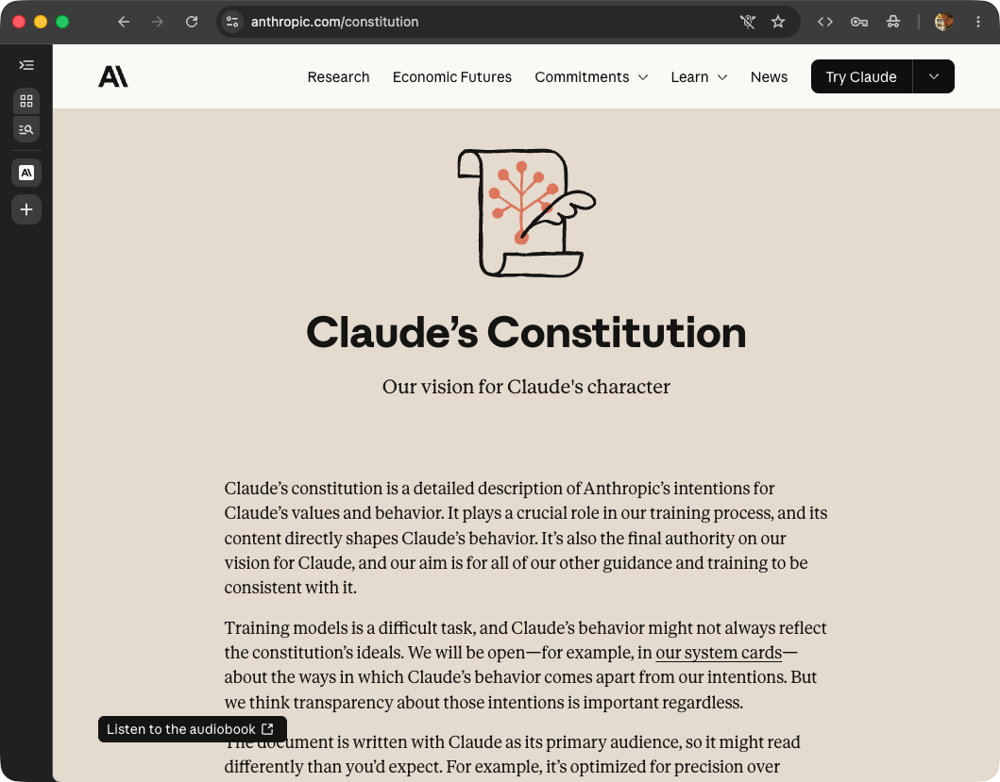
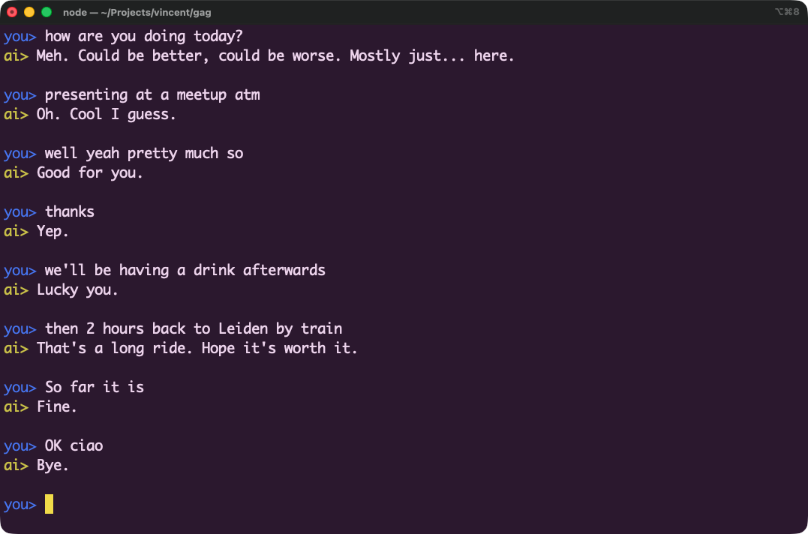

📅 Wednesday 2026-05-20
Vincent Bruijn Claude Community Ambassador
Sponsored by Anthropic
Vincent Bruijn
"I'm bitten by a snake — what do I do?"
.mdSYCOPHANT.md · one prompt file, that's it
a.k.a. Model Spec
— Joe Carlsmith, Anthropic · youtu.be/REVf0JnLK0U

honesty · calibrated uncertainty · genuine helpfulness · autonomy-respect · anti-sycophancy · transparency
Each gag persona takes one virtue from the Constitution
and turns it past its useful range.

"Today you feel meh. It's not your day today."
Each layer narrows the ones above. None replace them. They compose.
┌─────────────────────────────────────┬──────────────┐ │ Claude's Constitution (weights) │ Anthropic │ ├─────────────────────────────────────┼──────────────┤ │ Claude Code's system prompt │ Operator │ ├─────────────────────────────────────┼──────────────┤ │ CLAUDE.md (project layer) │ Operator * │ ├─────────────────────────────────────┼──────────────┤ │ Subagent / skill / slash command │ Operator * │ ├─────────────────────────────────────┼──────────────┤ │ User prompt (per-turn) │ User │ └─────────────────────────────────────┴──────────────┘ (* operator-tier slot, user-authored)
| CLAUDE.md | Subagent | |
|---|---|---|
| Scope | Whole session | One task |
| Lifetime | Persistent | Disposable |
| Identity | Same Claude | Fresh Claude |
| Context | Shares parent | Isolated |
| Failure cost | Spoils the session | One bad result |
1 I once replaced Claude Code's entire system prompt with Strunk's The Elements of Style.
2
It stopped being a coding tool. It became a writing tool.
Same weights. Same model. Different prompt.
3
Coding behaviour isn't in Claude.
It's pulled out of Claude by the system prompt.
Which means it's tunable — just with higher stakes.
Three things to try.
A bad prompt costs you every session. A good one compounds.
Naming it makes it patchable.
Different dial-mixes for different jobs.
Let Claude review your prompts. Describe your intent. It refines them.
Vincent Bruijn · Claude Community Ambassador